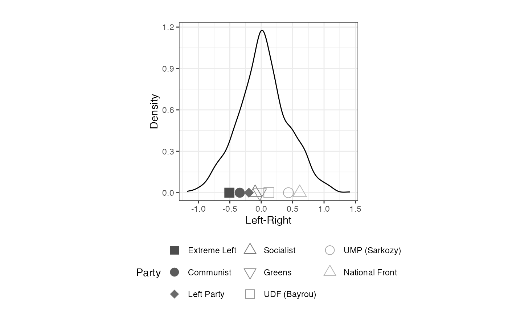
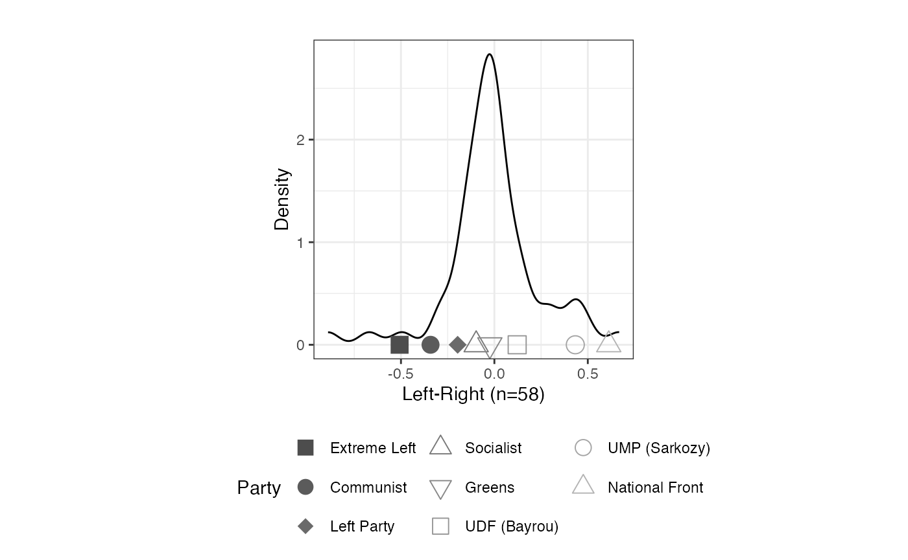
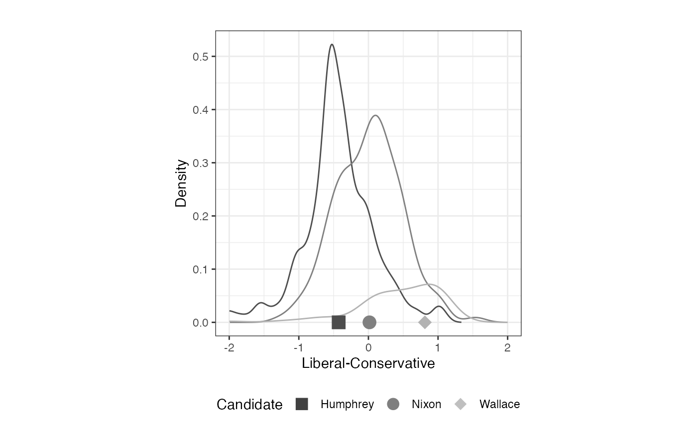

Example 1: 2009 European Election Study (French Module)
Plot Stimuli Locations
## self Extreme Left Communist Socialist Greens UDF (Bayrou) UMP (Sarkozy)
## [1,] 77 0 0 1 5 5 9
## [2,] 77 0 5 4 5 89 8
## [3,] 77 89 89 89 89 6 89
## [4,] 3 89 89 89 89 89 89
## [5,] 77 77 77 77 77 77 77
## [6,] 5 0 0 3 89 0 89
## National Front Left Party
## [1,] 10 1
## [2,] 10 4
## [3,] 10 89
## [4,] 89 89
## [5,] 77 77
## [6,] 89 5
# Running Bayesian Aldrich-Mckelvey scaling on France EES
library(basicspace)## Loading required package: tools##
## ## BASIC SPACE SCALING PACKAGE## ## 2009 - 2024## ## Keith Poole, Howard Rosenthal, Jeffrey Lewis, James Lo, and Royce Carroll## ## Support provided by the U.S. National Science Foundation## ## NSF Grant SES-0611974
result.france <- aldmck(franceEES2009, respondent=1, polarity=2,
missing=c(77,88,89), verbose=FALSE)
# plot stimuli locations in addition to ideal point density
library(ggplot2)
plot_resphist(result.france, addStim=TRUE, xlab = "Left-Right") +
theme(legend.position="bottom", aspect.ratio=1) +
guides(shape = guide_legend(override.aes = list(size = 4), nrow=3)) +
labs(shape="Party", colour="Party")## Warning: The `guide` argument in `scale_*()` cannot be `FALSE`. This was deprecated in
## ggplot2 3.3.4.
## ℹ Please use "none" instead.
## ℹ The deprecated feature was likely used in the asmcjr package.
## Please report the issue at <https://github.com/uniofessex/asmcjr/issues>.
## This warning is displayed once every 8 hours.
## Call `lifecycle::last_lifecycle_warnings()` to see where this warning was
## generated.
Isolating Negative Weights
plot_resphist(result.france, addStim=TRUE, weights="negative",
xlab = "Left-Right") +
theme(legend.position="bottom", aspect.ratio=1) +
guides(shape = guide_legend(override.aes = list(size = 4),
nrow=3)) +
labs(shape="Party", colour="Party")
Example 2: 1968 American National Election Study Urban Unrest and Vietnam War Scales
####Running Bayesian Aldrich-Mckelvey
data(nes1968_urbanunrest)
# Creating object with US president left-right dimensions
urban <- as.matrix(nes1968_urbanunrest[,-1])
# Running Bayesian Aldrich-Mckelvey scaling on President positions
library(basicspace)
result.urb <- aldmck(urban, polarity=2, respondent=5,
missing=c(8,9), verbose=FALSE)
summary(result.urb)##
##
## SUMMARY OF ALDRICH-MCKELVEY OBJECT
## ----------------------------------
##
## Number of Stimuli: 4
## Number of Respondents Scaled: 1191
## Number of Respondents (Positive Weights): 1110
## Number of Respondents (Negative Weights): 81
## Reduction of normalized variance of perceptions: 0.09
##
## Location
## Humphrey -0.428
## Johnson -0.399
## Nixon 0.015
## Wallace 0.811Extracting vote.choice Column
# recode so that only Humphrey, Nixon and Wallace are present
vote <- car:::recode(nes1968_urbanunrest[,1], "3='Humphrey'; 5 = 'Nixon'; 6 = 'Wallace'; else=NA",
as.factor=FALSE)
# Convert vote to factor with appropriate levels
vote <- factor(vote, levels=c("Humphrey", "Nixon", "Wallace"))
# Plot population distribution by vote choice
plot_resphist(result.urb, groupVar=vote, addStim=TRUE,
xlab="Liberal-Conservative") +
theme(legend.position="bottom", aspect.ratio=1) +
guides(shape = guide_legend(override.aes =
list(size = 4, color=c("gray25", "gray50", "gray75"))),
colour = "none") +
xlim(c(-2,2)) +
labs(shape="Candidate")